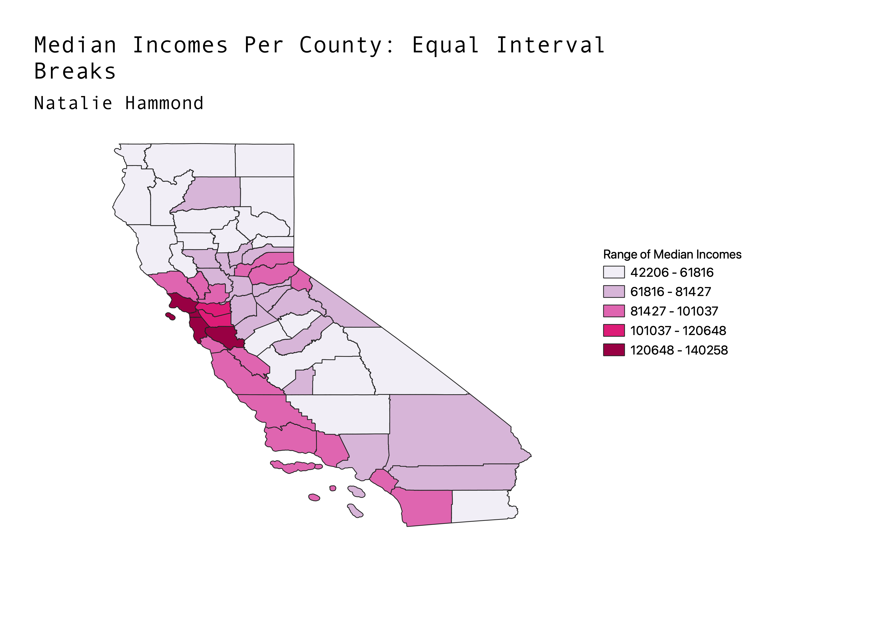
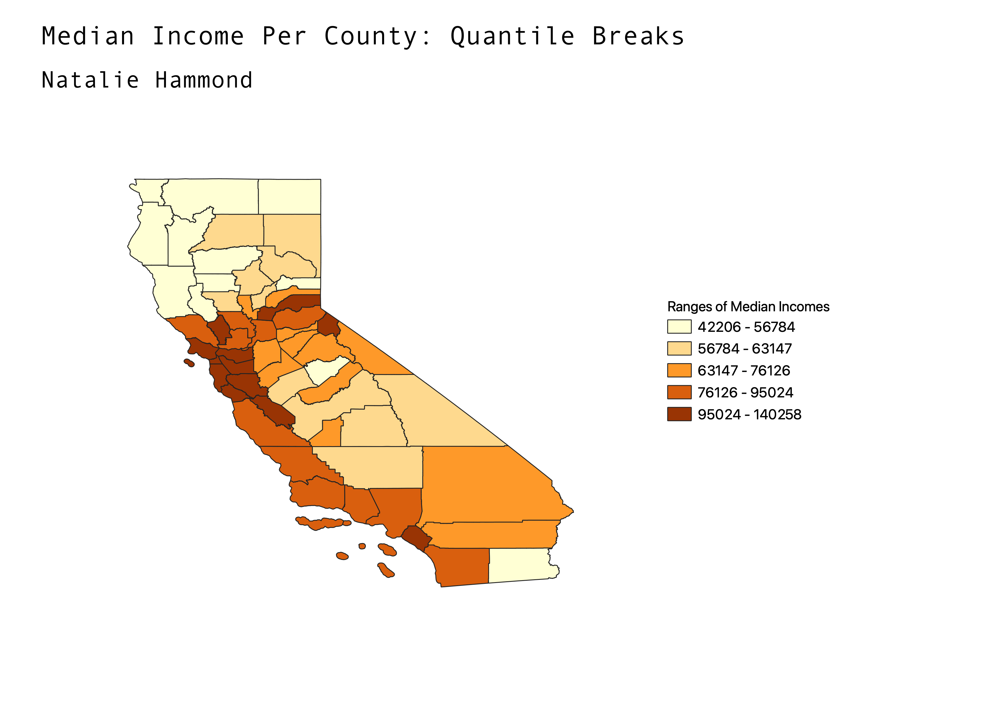
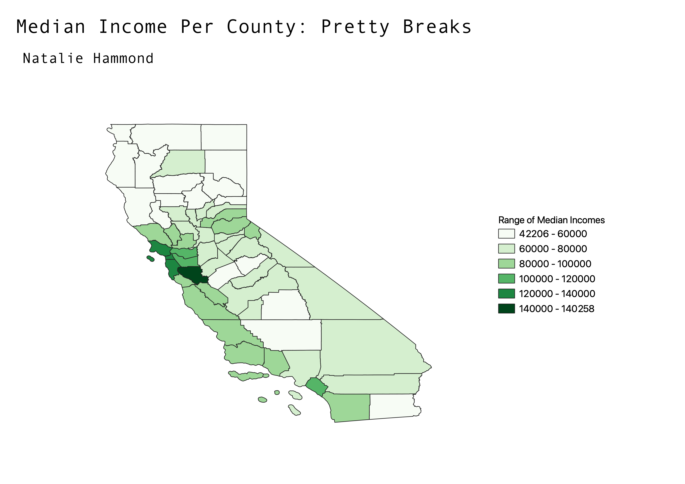

This map shows median income per county when classification bins are calculated with equal interval breaks. Equal interval breaks divide up bins of data so that each bin has the same range of data values per bin. With my data, the bins each range about $20,000 dollars. This way, most of the counties fall in the lower valued bins, with only four or so counties in the highest classification.
This map shows the median income values per county divided up into quantile breaks. Quantile breaks ensure that each bin holds the same amount of data values as the other bins do, so the spread of data quantity is consistent. This leads to data values that have various ranges for each bin. This classification leads to more clear differentation between the counties since you get an equal amount of colors spread on the map. This leads to an easier understanding of how the data is spread, but the values for the counties can range more with quantiles and may not be as accurate to the viewer's perception.
This map shows the median incomes across counties when the data is classified into pretty break bins. This classification uses rounded numbers so that the bins start and end with easy to understand values. For my data, this classification divided up the bins into relatively equal interval ranges, with the exception of the last bin of $140,000-$140,258. There is one value for the last bin. The map is easy to understand but a vast majority of values in the data set fall into light green color bins, so it can take time to differentiate them all.
